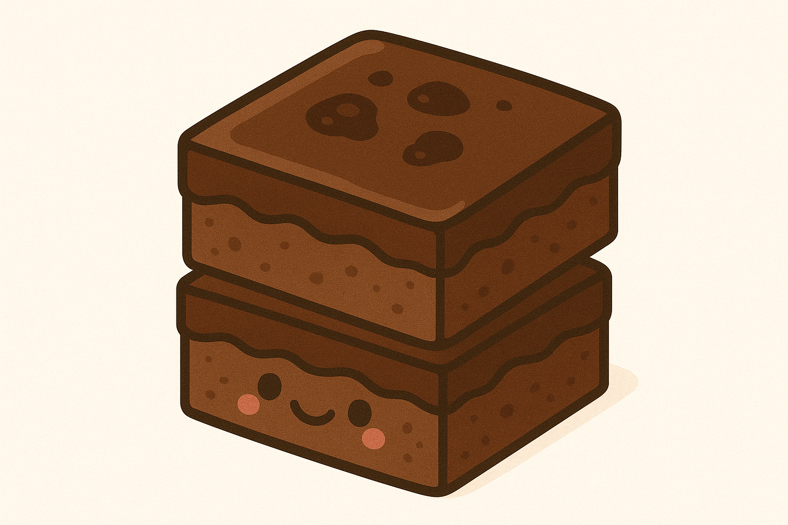

Home
Brownies

Description
These rich, fudgy brownies are the ultimate indulgence—crispy on the
edges, melt-in-your-mouth soft in the center, and packed with deep
chocolate flavor. Each bite offers that perfect balance between gooey and
chewy, with a glossy crackled top that hints at the decadence inside.
Whether enjoyed warm from the oven or cooled to dense perfection, they’re
a chocolate lover’s dream come true.
Made with real melted chocolate and a touch of butter, these brownies have
a luxurious texture that feels like a cross between a truffle and a cake.
Optional add-ins like chocolate chips or walnuts add extra bursts of
flavor and crunch, but even on their own, they’re dangerously good.
Perfect with a cold glass of milk or a scoop of vanilla ice cream, they’re
the kind of treat you’ll keep coming back to.
Equipment
Ingredients
- 1½ cups granulated sugar
- ¾ cup all-purpose flour
- ⅔ cup cocoa powder, sifted if lumpy
- ½ powdered sugar, sifted if lumpy
- ½ cup dark chocolate chips
- ¾ teaspoons sea salt
- 2 eggs
- ½ cup canola oil or extra-virgin olive oil
- 2 tablespoons water
- 1 teaspoon vanilla extract
Steps
-
Preheat the oven to 325°F. Lightly spray an 8x8 baking dish (not a
9x9 dish or your brownies will overcook) with cooking spray and line it
with parchment paper. Spray the parchment paper.
-
In a medium bowl, combine the sugar, flour, cocoa powder, powdered
sugar, chocolate chips, and salt.
-
In a large bowl, whisk together the eggs, olive oil, water, and vanilla.
-
Sprinkle the dry mix over the wet mix and stir until just combined.
-
Pour the batter into the prepared pan (it'll be thick - that's ok) and
use a spatula to smooth the top. Bake for 40 to 48 minutes, or until a
toothpick comes out with only a few crumbs attached (note: it's better
to pull the brownies out early than to leave them in too long).
Cool completely before slicing. Store in an airtight container at
room temperature for up to 3 days. These also freeze well!